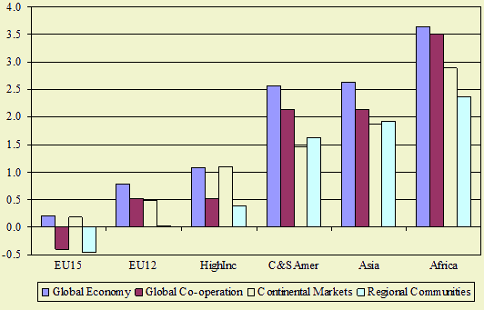

Highlights
Livestock production in the EU15 stabilizes or declines in Global Cooperation (B1) and Regional Communities (B2)
scenarios due to low economic growth and declining preference for animal protein.

Figure P5
Future developments
Livestock production growth is low in the EU relative to other countries. Lower
demographic and economic growth are important explanations. In the EU15 and
other high income countries meat consumption declines due to preference shift
in diet, especially in the Global Cooperation and Regional Communities scenarios. For the EU10 (and developing
countries) this effect is smaller: higher income leads to higher consumption.
Policy effects
Production growth of products with protection of CAP is lower than for other
agricultural products in all scenarios. Reduction of border support has a significant
negative impact in the global scenario's (Global Economy and Global Cooperation) where all border support
is abolished. The impact is less severe in the Regional Communities scenario where all export
subsidies are abolished. However, the reduction of output for protected commodities
in Regional Communities can largely be explained by the reduction of border support because there
is no ofsetting impact of high income growth.
Most important drivers
Macro-economic growth and agricultural policies